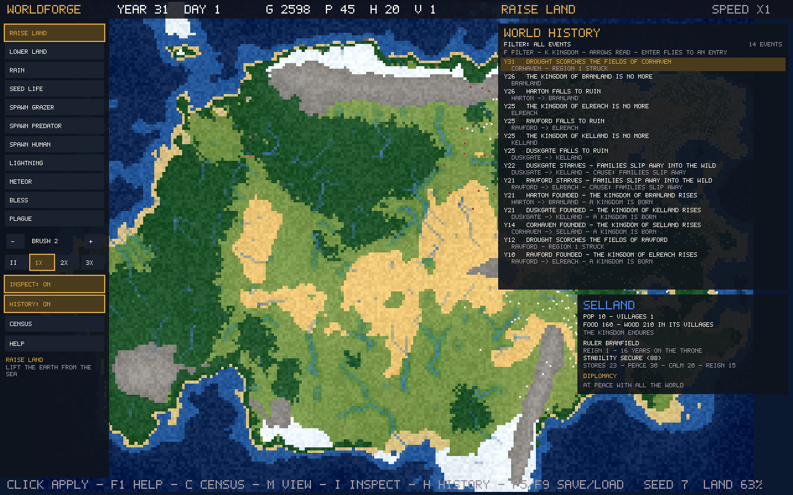
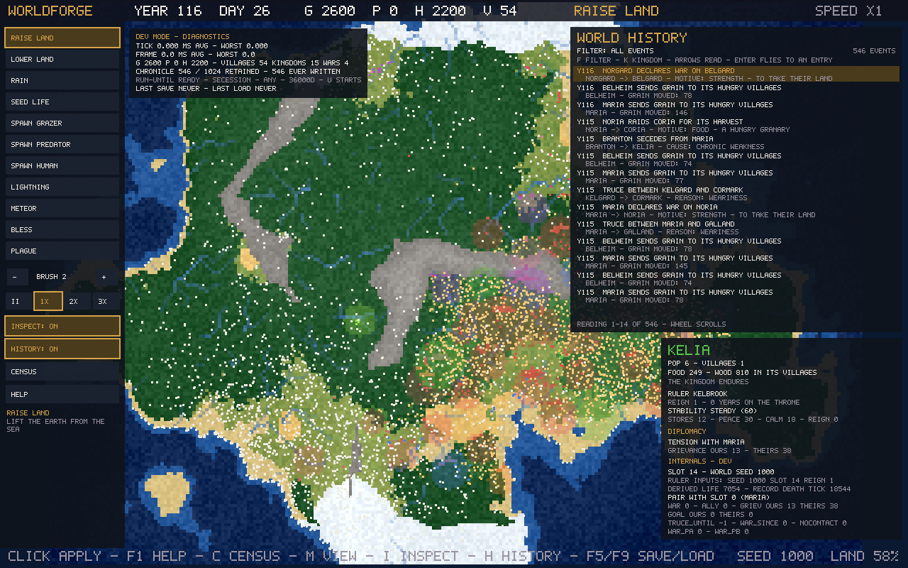
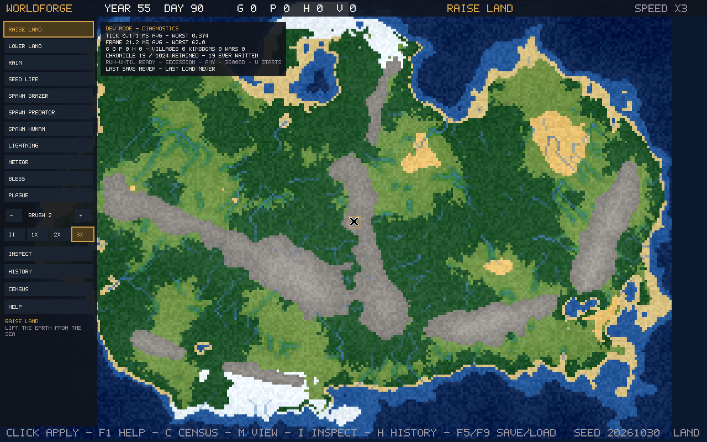

WorldForge
A living-world sandbox where geography shapes civilizations, civilizations shape history.
About
WorldForge generates a world — terrain, regions, resources — and then simulates the civilizations that rise inside it: settlements are founded, grow, expand, trade food with their neighbours, form kingdoms, and sometimes disappear. Everything is procedural and seeded: the same seed always grows the same world, and every world's history can be inspected and explained after the fact.
Working today
- Procedural terrain generation whose landforms affect where civilizations can thrive
- Settlements that form, grow, expand, migrate, and vanish — houses are built and burned on the map, and a kingdom's territory follows its built footprint
- Kingdoms with named rulers: lifespans, succession, and a stability measure whose components a player can inspect
- Diplomacy: contact between neighbouring kingdoms, grievances, wars, raids, truces, alliances, and allies called to war
- Warfare with mustered levies and granary supply, declared war goals, tribute paid at truce, and occupation — kingdoms can conquer each other's villages outright
- An inspectable chronicle that records major events with their reasons, plus per-kingdom census and history panels
- Instability: a weak kingdom can lose a village to a rival crown when a ruler dies, or watch its best-fed village break away and found a kingdom of its own
- Save and load in four slots, including diplomacy and ruler state; fully seeded and reproducible
The road so far
Five milestones, each designed, built, and verified before the next began. Every one passed the full test suite on a fresh build before it was accepted.
| Milestone | Build | What it added |
|---|---|---|
| First Chronicle | 0.1.0 | A structured world history with reasons — why wars started, why truces were signed — with filters and click-to-locate. |
| Threshold | 0.2.0 | First-run guidance, help, major-event banners, a census panel, and four save slots. |
| Sovereign | 0.3.0 | Named rulers with lifespans and succession, and a kingdom stability score whose parts can be inspected. |
| Marches | 0.4.0 | Real warfare: mustered levies fed from granaries, declared war goals, tribute, occupation, and outright conquest of villages. |
| Schism | 0.5.0 | Kingdoms under strain: succession crises and villages breaking away to found rival crowns. |
The game as it stands
Unretouched screenshots from development builds. What you see is the current interface — panels, diagnostics and all.




The full development roadmap — every stage and gate, with the current position marked — is on the roadmap page.
Roadmap
Planned — not yet implemented:
- A simulation observatory for the development tools: why values hold, permanent history, causal investigation (in development — current work)
- Living diplomacy: grievances that arise without a war, and alliances that form in ordinary play (designed; implementation paused while the observatory is built)
- Inter-kingdom trade and caravans; then physical settlements — more building types, roads, and city walls
- Seasons and climate that act on farming and survival; rivers with mechanical effects
- A first-play build for hands-on evaluation